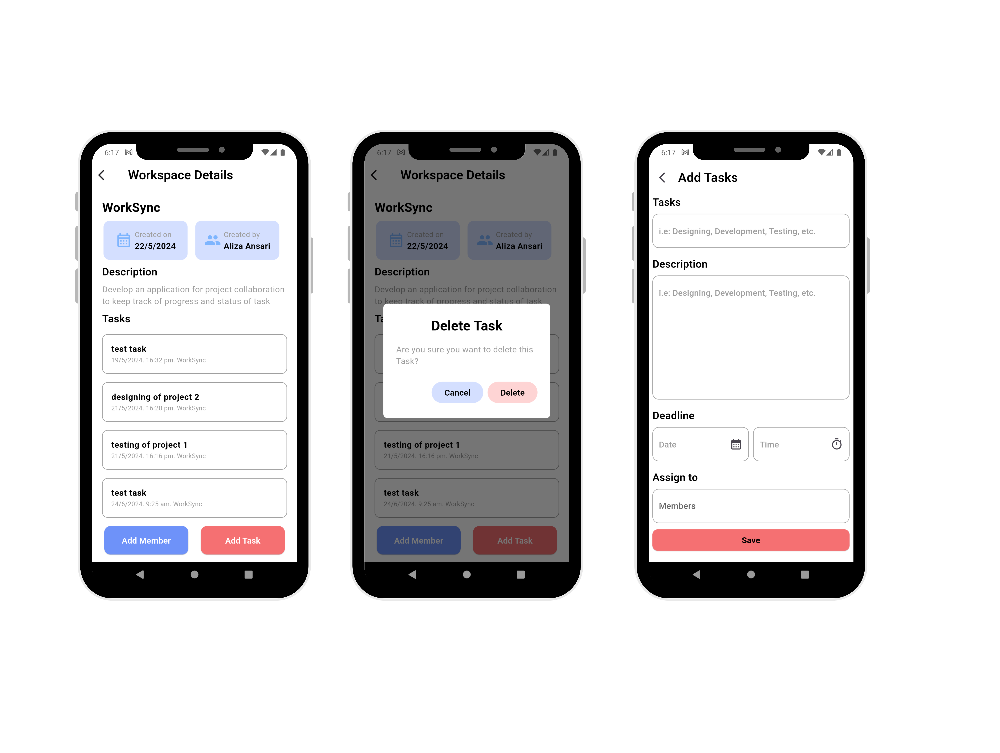

TaskMaster App

Overview
TaskMaster is a cross-platform mobile app for managing tasks with real-time syncing, built for productivity-focused users.
Problem
Users needed a reliable app to track tasks across devices without losing data or facing complex interfaces.
Solution
I developed TaskMaster using React Native for a smooth UI and Firebase for real-time data syncing. Features include offline support, push notifications, and a clean design.
Tech Stack
- React Native
- Firebase
- REST API
- Redux
Results
Boosted user productivity by 30% based on beta testing, with 95% satisfaction for ease of use.
Back to Projects